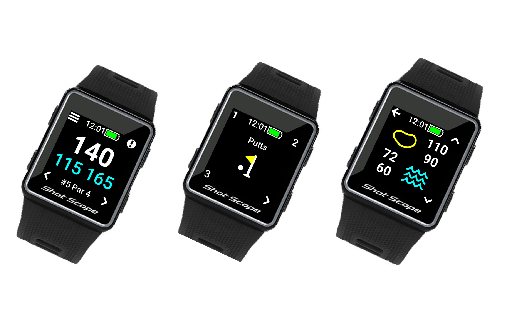
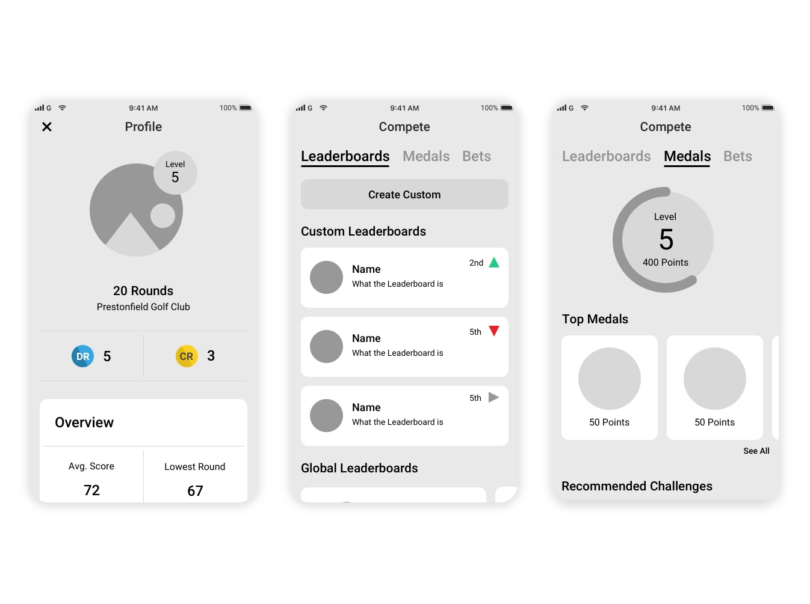

"My day to day focus at the moment is around maturing the platform and supporting the development team. We work far ahead of the final shipped product and I have currently been focussing on what the next steps could be to help improve engagement in the future."
About the Company
ShotScope is a scale-up golf technology company that primarily focuses on two core products, the V3 and G3. The V3 acts as a GPS throughout your round whilst collecting analytics about your game that can be viewed afterwards. The G3 just focuses on being an accurate GPS at a cheaper price point.
Whilst scaling up they have also released a laser rangefinder at a competitive price point with a wide feature set.
My Role
Joining the company in June 2019 as UI/UX designer has seen my focus on projects related to the tech team.
My day to day focus at the moment is around maturing the platform and supporting the development team. We work far ahead of the final shipped product and I have currently been focussing on what the next steps could be to help improve engagement in the future.
Platforms
Whilst working at ShotScope most of the focus has been around the mobile/ Dashboard elements of the platform. Elements of the mobile platform have been highlighted in other projects. However, changes to the dashboard have not been implemented at the time of writing so can't be displayed.
I have also worked on the watch firmware itself. This was on both the V3 and G3's custom firmware that built upon the success of the V2 firmware with cleaner navigation and less input's required to be included on the watch itself.

Design Tools and TechTeam Process
Within ShotScope we work under Agile methodologies with JIRA as the core to that system. Whilst working within sprint I will support the development team through the use of Zeplin and supporting documents along with the user stories from the product owner to help establish a clear understanding of what needs to be developed.
The creation of high fidelity mockups uses Sketch, Adobe XD, Invision, Zeplin and Adobe After Effects. We also use Zoom for our remote user testing.
Design Process Overview
A lot of the process has been shifted since joining shot scope as I wanted to promote a clearer understanding of what should be included in a correct UX process. Our Current process currently looks something like this:
Problem Framing / Spec
This may or may not be fleshed out depending on the particular project but this step ensures that we have a clear understanding of what we want the output to be.
This problem may stem from a competitor market response, direct tickets from support or various online forums/user groups that have been voiced by our community or directly from a user test that may have stemmed from another area of our product.
Wireframe
I will then create various versions of wireframes that focuses on combining some secondary research with user feedback to ensure we can get to a viable solution quickly.
Product Owner Review
I will then take these wireframes and discuss with the product owner what we want to achieve from this particular problem. This allows us to also generate some epics/user stories that could be added to the backlog.
Mid Fidelity
A couple of viable versions will then be taken to the mid-fidelity stage. This is so it can be presented to stakeholders which we have seen better feedback from a slightly higher fidelity than a wireframe.
User Interview / Feedback Loop
This next step will happen numerous times. With some prototypes in hand, we go back to a user focus group of around 5 per session, finding out what they like and what they think can be improved. Once we find a solution that we feel has been iterated on enough it can then be taken to a Hi-fidelity prototype.
Hi-Fidelity and technical discussions
The mid-fidelity prototype is then made pixel perfect and cleaned up to be a potential for future development. As we work quite far ahead of the development team this can be chopped and changed depending on market pressures, extra features that may be requested by users and technical requirements from developments. If this happens, we then go into another feedback loop.

Development Support
Once the final design has been achieved and the feature is in development the focus shifts to ensuring enough support is given to developers. This may involve some asset management or conversations explaining intricacies to testing the product to ensure it remains consistent with the final design. If there is any technical issue with the implementation we may use a shorten feedback loop to make changes to ensure the sprint is achieved.
Conclusion
So there's a quick overview of the ShotScope world and my role within it. In this portfolio, there are some example snippets of what has been developed and released whilst working at ShotScope.